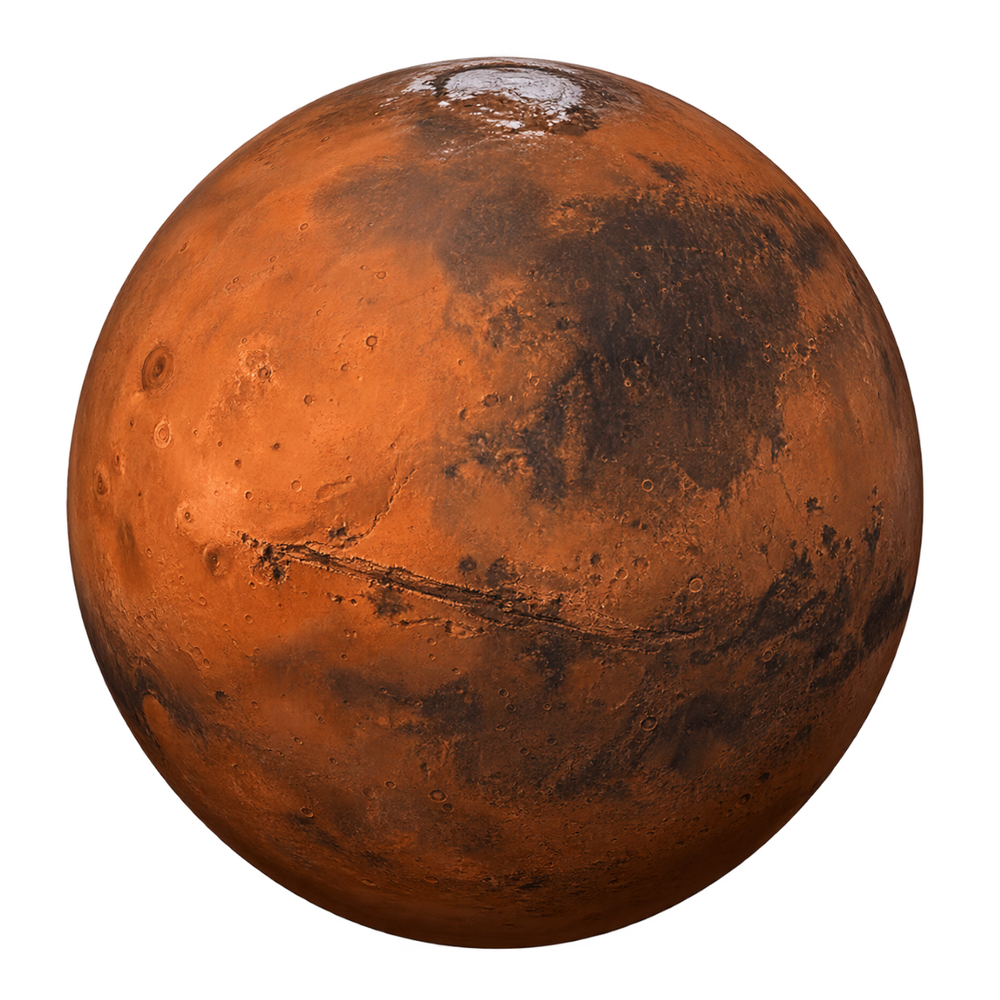

CALCULADORA GRAVITACIONAL DEL SISTEMA SOLAR
Calcula peso, masa y aceleraccion gravitacional real en cuerpos celestes del Sistema Solar
Parámetros
Marte

Tu peso sería:
Tamaño
6.779 km
Composición
Roca y minerales
Lunas
2
Distancia al Sol
227.9 millones km